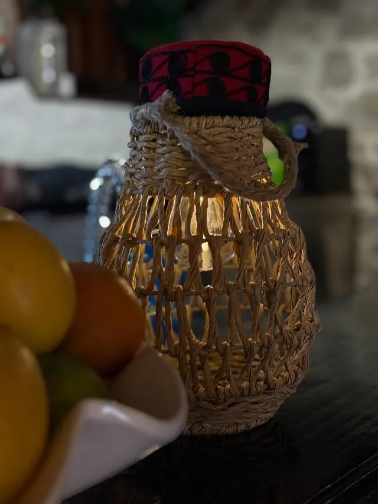
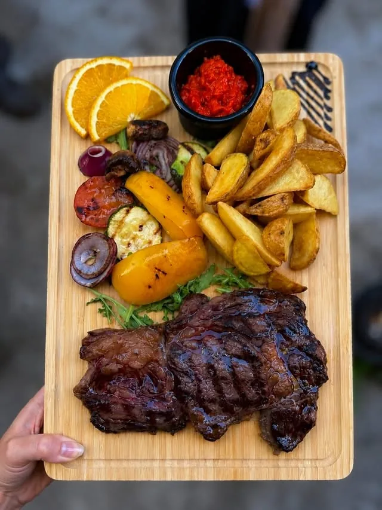

Dalmatinska konoba · Vodice
Konoba Rustika
Jela ispod peke,
riba i meso s gradela.
Tradicija i okusi u kamenom kantunu.
Listaj
Jela ispod peke,
riba i meso s gradela.
Tradicija i okusi u kamenom kantunu.
Konoba Rustika stoji u kamenom kantunu u Vodicama, na adresi Ul. Kamila Pamukovića 5. Kuhinja je dalmatinska: jela ispod peke, riba i meso s gradela.
Otvoreno svaki dan od 17:00 do 01:00. Stolovi su vani, u kamenoj uličici pod fenjerima. Za stol i za jela ispod peke najbolje je nazvati unaprijed.
Pod teškom željeznom zvonom, zatrpanom žarom, jelo se kuha satima. To je peka, stari dalmatinski način pripreme. Kod nas je na jelovniku i ostala je ono po čemu nas gosti pamte.
Ispod peke pripremamo hobotnicu, teletinu, janjetinu i pivca. Ispod peke peče se i naša domaća focaccia.
Peka traži vrijeme i pripremu. Dostupnost i narudžbu provjerite telefonom.
Za peku nas nazovite: +385 91 1644 863

Stolovi su vani, u kamenoj uličici pod fenjerima. Zidovi su stari kamen, vrata zelena, a večer se otegne dokle traje razgovor.
Kuhinja radi do kasno: svaki dan smo otvoreni od 17:00 do 01:00, pa se kod nas večera i onda kad drugdje već zatvaraju.



Nemamo online sustav rezervacija. Nazovite nas ili pišite, a mi ćemo se pobrinuti za ostalo.
Konoba Rustika nalazi se na adresi Ul. Kamila Pamukovića 5, 22211 Vodice, u kamenoj uličici iznad vodičke rive. Stolovi su na otvorenom, u zaklonjenom kantunu.
Otvori na Google kartama →